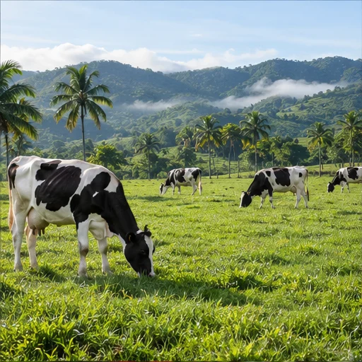
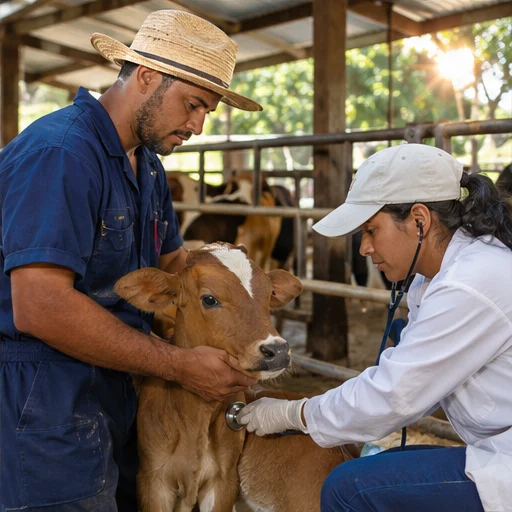

Misión
Producir leche y carne con prácticas responsables y atención al bienestar del ganado.

FINCA GANADERA FAMILIAR
Del campo, con cuidado.
Conoce nuestra producción de leche y carne bovina y el trabajo que hay detrás de cada producto.
ContáctanosNOSOTROS
El Progreso nació como una empresa familiar dedicada a la producción de leche y carne bovina. En los últimos años ha aumentado su producción y busca acercarse a clientes, inversionistas y visitantes.
Nuestro equipo reúne a la familia que administra la finca y al personal que cuida el ganado, realiza el ordeño y mantiene las instalaciones.

Producir leche y carne con prácticas responsables y atención al bienestar del ganado.
Crecer como finca familiar y construir relaciones duraderas con nuestros clientes.
Responsabilidad, cuidado animal, trabajo en equipo y respeto por el campo.
SERVICIOS
PRODUCTOS
Precios referenciales en pesos dominicanos. Catálogo de muestra.
GALERÍA
Selecciona una imagen para verla en grande. Las fotografías son ilustrativas.
CONTACTO
Datos de contacto de ejemplo para la presentación del proyecto.
Dirección de referencia